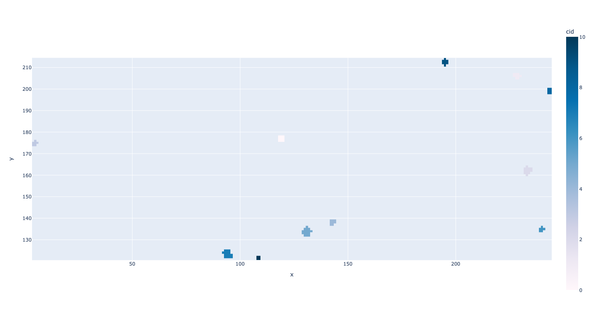

Clustering¶
The raw pixel head data contains some redundancies since a single particle hitting the detector register many times over causing many pixel hits. We can cluster these pixel heads, which essentially means grouping them into collections of pixels that we think came from a single event, or particle hitting the sensor.
How do you determine whether a collection of pixel hits actually belong to the same event? Well, if two pixel hits are close enough in time and space then they belong to the same event. This concept is more easily understood with a graphic.

In Luna, we have two clustering algorithms and they are described below.
DFS Cluster Overview¶
The DFSCluster struct is responsible for clustering and centroiding pixel hits. It leverages depth-first search (DFS) to identify clusters based on spatial (eps_s) and temporal (eps_t) proximity. Although the clustering algorithm draws on concepts from graph traversal, no explicit graph structure is constructed. Instead, connections between pixel hits are implied based on their proximity, allowing DFS to be used effectively. Additionally, the pixel hit data is pre-sorted by time, which optimizes the clustering process by reducing unnecessary comparisons.
The clustering algorithm in DFSCluster is designed to identify and group pixel hits that are spatially and temporally close to each other. The relationships between pixel hits form an implicit graph where edges exist between nodes (pixels) that satisfy the spatial and temporal constraints, enabling DFS to traverse and cluster the hits. The pre-sorted nature of the pixel hit data by time allows the algorithm to skip comparisons that would otherwise be redundant, significantly enhancing efficiency.
The process can be summarized as follows:
Initialization: - The algorithm begins by setting parameters such as eps_s (spatial gap), eps_t (temporal gap), and timewalk correction options. - A queue (data_queue) is prepared to hold incoming chunks of pixel hits to be processed.
Enqueuing Data: - Pixel hits are added to the processing queue. The algorithm updates the already_processed_hits vector to track which hits have already been clustered.
Processing Chunks: - Each chunk of pixel hits is processed individually by the process_chunk method, which attempts to form clusters starting from unprocessed hits.
Depth-First Search (DFS) for Clustering: - The find_cluster method is the core of the clustering process. Starting from an unprocessed hit, DFS is used to explore all neighboring hits within the specified spatial and temporal distances (eps_s and eps_t). - Each pixel hit is treated as a node, with an implicit edge formed between nodes if they are within the defined proximity limits. DFS continues until all connected hits are explored, forming a cluster. - Because the pixel hits are pre-sorted by time, the algorithm can cease further comparisons once it encounters a hit that exceeds the temporal distance (eps_t), reducing the number of operations required to form clusters.
Cluster Validation: - After DFS completes for a starting hit, the algorithm checks the size of the formed cluster. Clusters that do not meet the min_cluster_size or exceed the max_cluster_size are discarded. - For valid clusters, timewalk correction is applied if enabled.
Merging Clusters: - After processing all chunks, the algorithm merges clusters that are close enough across chunk boundaries to prevent artificial splitting of clusters.
Finalization: - The resulting clusters are stored in the clusters container, ready for further processing or analysis.
Kuttruff2024 Clustering¶
The Kuttruff2024 algorithm is much newer than the DFSCluster algorithm. As such, it is still considered an experimental implementation. Readers are invited to read their paper directly to understand how it works.
The Kuttruff2024Clustering algorithm implements a high-performance, real-time clustering algorithm specifically designed for event-driven hybrid pixel detectors. This algorithm is engineered to efficiently process high-frequency data streams, such as those produced by advanced electron detectors, enabling the continuous and seamless processing of incoming pixel hits without any operational interruptions. The algorithm leverages both spatial (eps_s) and temporal (eps_t) proximity criteria to dynamically group hits into clusters, ensuring that the computational workload remains efficient and manageable, even under high data rates.
The Kuttruff2024Clustering algorithm is structured around the concept of continuous data processing, where each incoming pixel hit is evaluated and clustered in real-time. A central feature of the algorithm is its use of a small, fixed-size buffer of recently detected clusters. This buffer allows the algorithm to limit the scope of comparisons, making the process highly scalable as data rates increase. The fixed buffer strategy, combined with the temporal sorting of pixel hits, significantly reduces computational overhead and ensures that the algorithm can operate at the maximum data rates supported by modern detectors.
Unlike the DFSCluster algorithm, which checks for pixels within an eps_s distance from every pixel already in the cluster and gradually expands the cluster by including these neighboring pixels, the Kuttruff2024Clustering algorithm performs the spatial check relative to the current position of the cluster being formed. This subtle difference in approach means that the eps_s parameter represents slightly different concepts in the two algorithms. In practical terms, eps_s in Kuttruff2024Clustering defines the region around the centroid of the forming cluster within which new hits are considered for inclusion. As demonstrated in the referenced paper (Fig. 4a), the region of convergence for the distance parameter is >5 pixels. In Luna development, we often used eps_s = 6 to reflect this convergence region.
The key steps of the process are as follows:
Initialization: - The algorithm is initialized with key parameters: eps_t (temporal gap), eps_s (spatial gap), and b (buffer size), which define the clustering criteria and the size of the fixed history buffer used for comparisons. - Two main data structures are used: data_queue, which stores incoming chunks of pixel hits, and processed_data, which holds the chunks that have already been processed.
Data Enqueuing: - Incoming pixel hits are continuously added to the data_queue for processing. As new hits arrive, they are temporarily stored in the queue until they can be processed. - The algorithm maintains a buffer of recently processed clusters, which is used to compare against new hits. This buffer is crucial for maintaining efficiency, as it limits the number of comparisons needed for each new hit.
Chunk Processing: - The algorithm processes each chunk of pixel hits individually. During this step, each hit within the chunk is evaluated to determine whether it can be merged into any of the existing clusters in the buffer based on the spatial (eps_s) and temporal (eps_t) proximity criteria. - If a hit is sufficiently close to the current position of an existing cluster in both space and time, it is merged into that cluster. If no suitable cluster is found, the algorithm initializes a new cluster, and the oldest cluster in the buffer is removed to make room for new data.
Fixed-Size Cluster Buffer: - The buffer size is kept fixed, meaning that the algorithm maintains a constant number of recent clusters in memory. This design choice ensures that the computational load remains predictable and manageable, even as data rates fluctuate. - If a hit does not match any existing cluster in the buffer, a new cluster is created, and the oldest cluster is outputted for further analysis or storage. This approach ensures that the algorithm remains efficient even at high data rates, but the fixed buffer size also means that older clusters may be prematurely discarded if the buffer limit is reached.
Finalization: - Once processing is complete, the resulting clusters are stored in the clusters container, which can then be used for further analysis, storage, or downstream processing. The algorithm is designed to handle the maximum data rates of modern detectors without creating bottlenecks, ensuring real-time data processing.
Finally, while the algorithm is new and therefore untested by time you can see that the algorithm performs similarly to the DFSCluster algorithm _clustering-first100hits-kuttruff.
{kind=link}